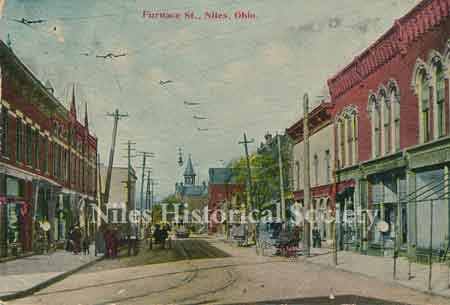
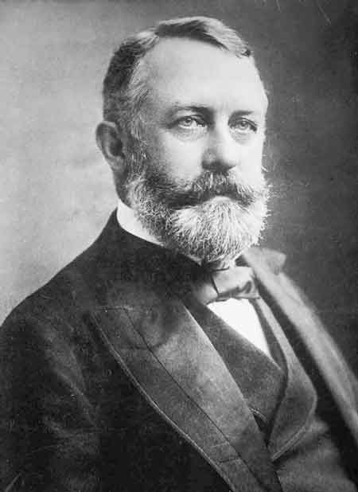

History of the Early Library in Niles, Ohio
Click on any photograph to view a larger image.
To
purchase a high-resolution print of any listed photograph on this page
without the visible watermark, E-Mail
Us
Use the image ID Example: PO1.1023
| E-Mail Us | Phone: 330.544.2143 | Mail: PO Box 368 Niles, Ohio 44446 |
News
Tours
Individual Membership: $20.00
Family Membership: $30.00
Patron Membership: $50.00
Business Membership: $100.00
Lifetime Membership: $500.00
Corporate Membership:
Call 330.544.2143
Do you love the history of Niles, Ohio and want to preserve that history and memories of events for future generations?
As a 501(c)3 non-profit organization, your donation is tax deductible. When you click on the Donate Button, you will be taken to a secure Website where your donation will entered and a receipt generated.
|
P01.646 |
The Niles Public Library was started as a civic project. On April 8, 1908 the Niles Library Association was incorporated and a board of nine trustees was elected. Tax levies of .3 of a mill each were made by the City Council and the Board of Education were first paid into the Library treasury in March, 1909. A large room in the W. A. Thomas building on Furnace St. was offered rent free by Mr. Thomas. In this room the library was housed until 1916. |
|
| |
||
|
P01.649 |
The
interior of the Niles Library when it was in a rent free room owned
by W. A. Thomas on the bend of Furnace Street (East State Street).
It contained a total of 2,882 books and operated during the hours
of 9-5, 6:30-8:30 daily. |
|
| |
||
|
P01.647 |
Story
Hour at the old library on Furnace Street in Niles. Furnace Street
is now part of State Street. |
|
| |
||
 |
A
view of the curve on Furnace Street that shows the Public Library(bottom
right corner). |
|
| |
||
| A
view of Mill Street looking east from Main Street. Mill and Furnace
Streets were combined into State Street. The yellow arrow indicates
the approximate location of the old library. |
||
| |
||
| This
postcard shows the McKinley Memorial whose left wing houses the
new library. The erection of the library wing of the Memorial was
made possible largely through the gift of $50,000.00 by Henry
C. Frick, his gift being specifically for the library. |
||
| |
||
 |
A view of the new library wing featuring the circulation desk and a bronze bust of Henry C. Frick. A photograph of the original check wriiten by Henry C. Frick to the Memorial Library in the amount of $50,000.00. P01.765 |
 |
 |
Henry Clay Frick (December 19, 1849 – December 2, 1919) was an American industrialist, financier, union-buster, and art patron. He founded the H. C. Frick & Company coke manufacturing company, was chairman of the Carnegie Steel Company, and played a major role in the formation of the giant U.S. Steel steel manufacturing concern. He also financed the construction of the Pennsylvania Railroad and the Reading Company and owned extensive real estate holdings in Pittsburgh and throughout the state of Pennsylvania. He later built the historic neo-classical Frick Mansion (now a landmark building in Manhattan) and at his death donated his extensive collection of old master paintings and fine furniture to create the celebrated Frick Collection and Art Museum. |
|

{kind=link}
{kind=link}
{kind=link}
{kind=link}
{kind=link}
{kind=link}